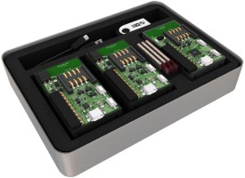

IQRFBB-10 Development Board
Powered for you by logimic.com

IQRF development board helps you to design IQRF wireless devices like sensors and actuators. Just connect sensors, load software and you get fully working IQRF prototype of device.
IQRF Board Repository layout
- Getting Started with IQRFBB-10 shows how to configure IQRF network, how to configure and connect IQRFBB-10 board into IQRF network and how to verify proper connectivity.
- Application examples are hardware and software projects that you can use in your development for free. You are getting many working examples.
- Documentation like data sheets, drawings, guidelines etc...
How to buy

Order.. IQRFBB-10
Logimic IQRFBB-10 Development Board
TR-76DA transciever.
* Cabling

Order.. DS-START-04
You need this device if you do not have any working IQRF network.
Licensing
All content in the repository is licensed via the MIT license